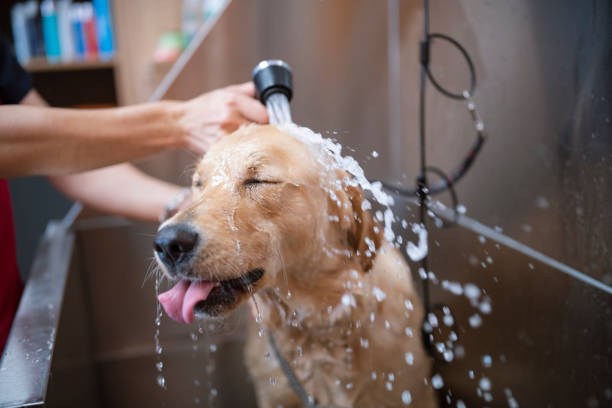

All About Dogs!
All about Dogs!
many people like a pets and pets are seen in lots of families almostevery part of the world. and now we are going to see a one of the pets in dog.

There are many types of dogs, let me name a few for you!
- German Shepherds
- Golden Retrievers
- Beagles
- Bull Dogs
- Great Danes
- Poodles
- Huskeys
- Pit Bulls
- Boxers
- and Pugs!
These are Just some breeds of Dogs, there are hundreds more.
Here Are some fun facts!
"1.There are more than 150 dog breeds, divided into 8 classes: sporting, hound, working, terrier, toy, non-sporting, herding, and miscellaneous.
2.According to a recent survey, the most popular name for a dog is Max. Other popular names include Molly, Sam, Zach, and Maggie.
3.Dogs can vary in size from a36 inch (150+ lb.) Great Dane to a 2 lb.Chihuahua.
4.Puppies and kittens can be adopted as early as 8 weeks of age. Until then, they should stay with their moms and littermates.
5.About 1/3 of the dogs that are surrendered to animal shelters are purebred dogs.
6.Contrary to popular belief, dogs do not sweat by salivating. They sweat through the pads of their feet.
7.Dogs may not have as many taste buds as we do (they have about 1,700 on their tongues, while we humans have about 9,000), but that doesn’t mean they’re not discriminating eaters. They have over 200 million scent receptors in their noses (we have only 5 million) so it’s important that their food smells good and tastes good.
8.The term “dog days” has nothing to do with dogs. It dates back to Roman times, when it was believed that Sirius, the Dog Star, added its heat to that of the sun from July 3 to August 11, creating exceptionally high temperatures."
HOW TO TREAT YOUR DOG'S
All proper owners should walk your dogs every day !

Dogs should be bathed AT LEAST once a month how ever some breeds reqier a bath once a week! after every bath your dog should be brushed !

Your Dog Should be feed at least twice a day, unless consulted by a vet not to. Some dogs just have food laying out all the time, however this can be unhealthy for your dog and may make him/her obese. Depending on the type of dog/ what his/her vet says, some dogs should get Breakfast, Lunch and Dinner. Dogs should eat dog food, or some types of people food.
THINGS DOGS SHOULD NOT EAT/DRINK
- Alcohol.
- Avocado.
- Chocolate, Coffee and Caffeine.
- Citrus.
- Coconut and Coconut Oil.
- Grapes and Raisins.
- Macadamia Nuts.
- Milk/ Dairy Products
- Nuts of any kind
- Onions, Garlic, Chives
- Raw/Undercooked Meat, Eggs and Bones
- High salt foods!
- Xylitol (used as sweetener)
- Yeast Dough
If your dogs do consume one of these foods call ASPCA Animal Poison Control Center There Phone Number is: (888) 426-4435
Saving Dogs
Dogs get injured in many ways, every day something happens to hundreds of dogs, weather they get ran over, or fall of a cliff, or just get sick. You can save animals from all over the country just by donating a little money to the ASPCA, when you donate to the ASPCA your money can feed dieing dogs, or fund money to give them surgery.
Thank You for reading my article on dogs! for more in for click Here! Dogs are living creatures to, take care of them.
.jpg)